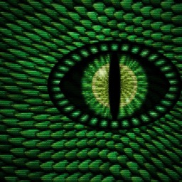
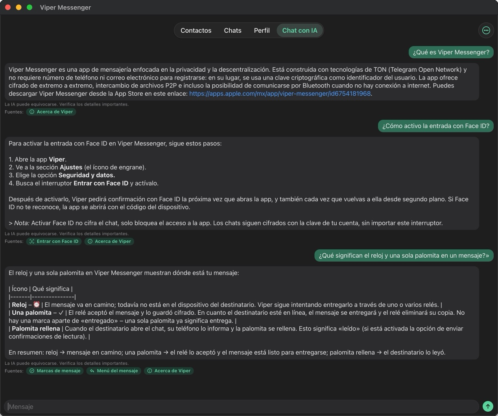
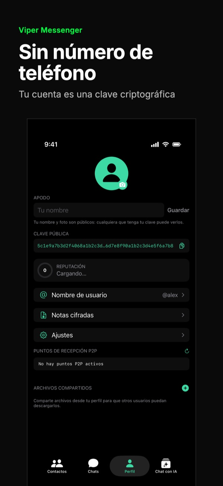
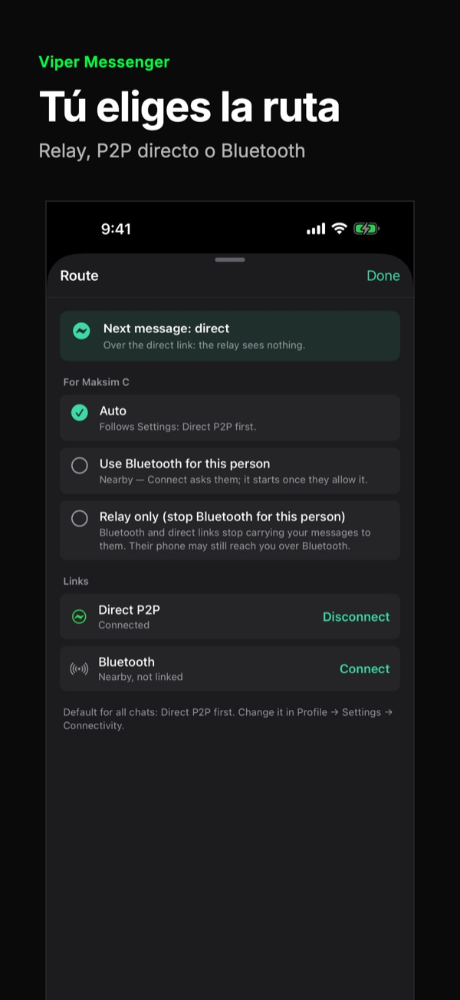
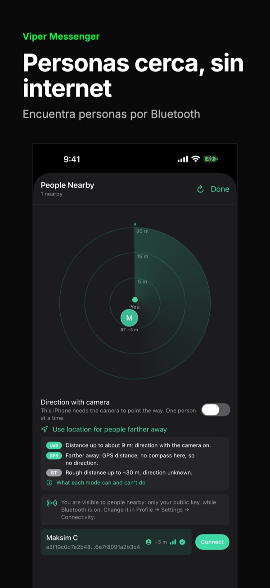
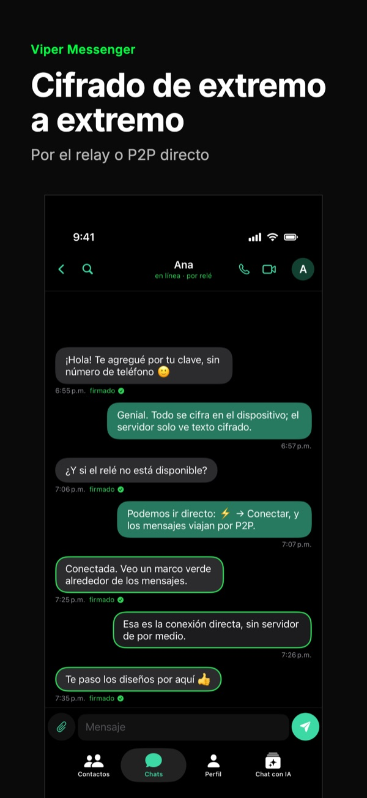
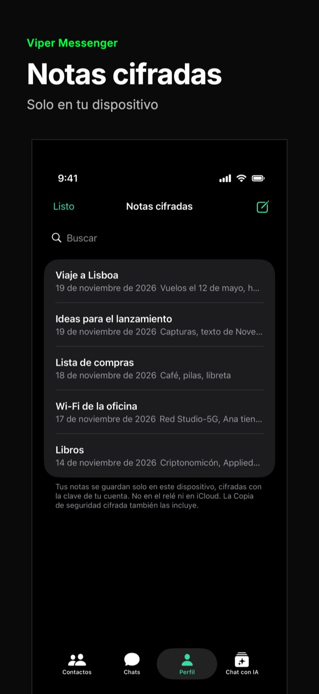
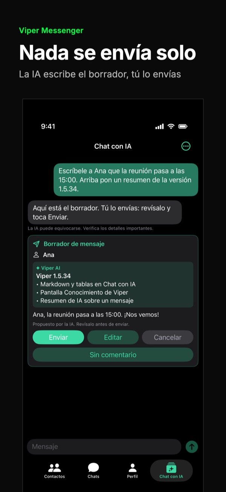

Viper Messenger
Un mensajero privado construido sobre TON. Los mensajes van de dispositivo a dispositivo siempre que se puede, todo está cifrado de extremo a extremo y tu cuenta es una clave: sin número de teléfono ni correo.
IA en el dispositivo: gpt-oss-20b corre localmente en tu Mac (Apple silicon, 24 GB): responde con las guías de Viper y nada sale del dispositivo. En iPhone y iPad, modelos abiertos más pequeños.
iPhone · iPad · Mac

Privado por cómo está hecho
No es una promesa en una política: el diseño le deja muy poco que saber a un servidor.
Directo, de dispositivo a dispositivo
Los mensajes y archivos van directo entre dispositivos siempre que se puede, sin servidor en medio. Cuando no hay enlace directo posible, el relay pasa lo que no puede leer.
Cifrado de extremo a extremo
Solo tú y la otra persona pueden leer sus mensajes: por enlace directo, por Bluetooth y a través del relay por igual.
El historial vive en tu dispositivo
Los chats se guardan cifrados en tu dispositivo. El relay borra cada mensaje en cuanto se entrega y no guarda historial.
Sin número de teléfono ni correo
Tu clave criptográfica es tu cuenta. Empieza con una frase de recuperación de 24 palabras, sin registro; la misma frase lleva tu cuenta a un dispositivo nuevo.
Voz, videos circulares, archivos grandes
Notas de voz, videos circulares de hasta 30 segundos y archivos grandes. Si se cae la conexión, la transferencia sigue donde se quedó.
Nombres de usuario .ton
Usa como nombre un dominio TON DNS que sea tuyo on-chain. Escribe un nombre con .ton en la búsqueda para ver quién lo tiene.
Billetera TON integrada
Tu frase de recuperación también crea una billetera TON sin custodia: las mismas palabras restauran tu cuenta y tu billetera.
Viper Pro
El anonimato (Anon Mode) te saca de la búsqueda mientras tus chats siguen funcionando, y Ocultar estado en línea (Hide Online Status) te muestra desconectado para todos.
Personas cerca, sin internet
Encuentra usuarios de Viper a tu alrededor por Bluetooth y chatea sin ninguna red. Mira TON Drop.
IA en el dispositivo
Un chat de IA que funciona en tu dispositivo y conoce Viper. Prepara borradores de mensajes, eventos y notas; nada se envía hasta que confirmas. Más.
También en la app: llamadas de audio y video en iPhone (cifradas de extremo a extremo, por el relay), Notas cifradas, bloqueo con Face ID y copia de seguridad cifrada de los chats.
Un vistazo por dentro






Pantallas de Viper 1.5.34 generadas en el simulador de iOS con contactos y mensajes de ejemplo. La pantalla de borrador de IA necesita gpt-oss-20b, que funciona en Mac.
Bluetooth para encontrarse. TON para seguir en contacto.
Dos usuarios de Viper que están cerca se encuentran y empiezan a hablar al momento: sin internet, sin número de teléfono, sin nombre de usuario. Así está exactamente hoy.
- Ya funciona
Descubrimiento por Bluetooth. Personas cerca muestra a los usuarios de Viper a tu alrededor y más o menos a qué distancia están. Cada persona de la lista demostró que su cuenta es suya.
- Ya funciona
Totalmente sin conexión por Bluetooth. Mensajes, notas de voz, videos circulares y archivos van de teléfono a teléfono sin red ni servidor.
- Ya funciona
Bluetooth y luego directo por internet. Los teléfonos pueden intercambiar sus direcciones IP por Bluetooth y luego conectarse directo, P2P por internet con TON, sin servidor en medio.
- En desarrollo
Un enlace estable fuera de alcance. Hoy, si cambia la dirección IP de cualquiera de los teléfonos, el enlace directo se corta. Para mantenerlo, los teléfonos tienen que volver a encontrarse mediante TON DHT; ese es el trabajo en curso para que TON Drop funcione por completo como se describe.
Un modelo abierto, sin tocar. Viper pone el resto. En tu dispositivo.
En Mac, Viper ejecuta gpt-oss-20b localmente: sin nube, sin cuenta de IA, tus preguntas nunca salen del dispositivo. Responde con las guías propias de Viper y muestra las fuentes bajo cada respuesta, para que lo compruebes con un toque.
Respuestas traducidas de la sesión original en ruso.
- Sin entrenamiento. Los pesos del modelo son exactamente los publicados. Viper cambia lo que el modelo ve, no lo que es: cámbialo por un modelo mejor y el conocimiento se queda.
- Fuentes bajo las respuestas. Las respuestas salen de las guías de Viper dentro de la app, y las guías usadas aparecen justo debajo.
- Borradores, no acciones. Pídele que le escriba a alguien, cree un evento o guarde una nota: prepara un borrador y no pasa nada hasta que confirmas.
- Tú eliges lo que sabe. Activa o desactiva el conocimiento integrado de Viper y agrega tus propias notas.
Todavía no siempre acierta: la prueba estricta cuenta una respuesta como correcta solo si cada detalle sobre Viper es cierto. Una versión nueva llega al 61% en el banco de pruebas y aún no está en la app. gpt-oss-20b necesita una Mac con Apple silicon y 24 GB de memoria; iPhone y iPad usan modelos abiertos más pequeños. El informe completo →